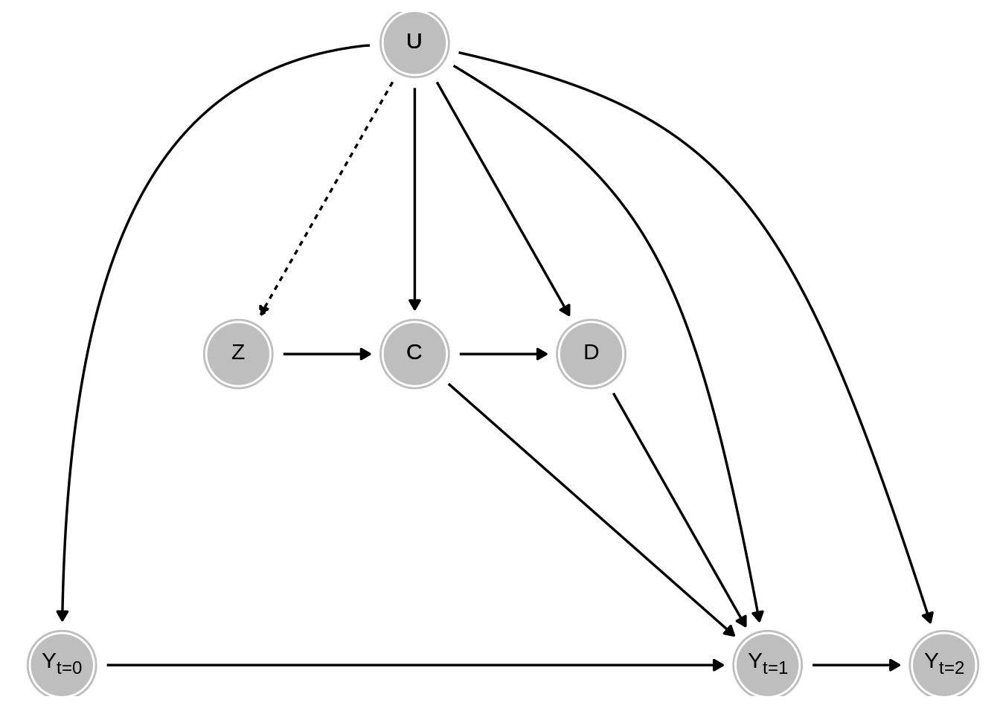

Chapter 5 Directed Acyclic Graphs and Potential Outcomes
We make use of two different formal languages for describing causal models: DAGs and potential outcomes. DAGs are “directed acyclic graphs,” where each node on a graph is a variable and the edges that connect them represent causal effects. DAGs emphasize a mechanical notion of causality: when the exposure variable changes, the outcome variable changes as a result. By contrast, the potential outcomes formalization emphasizes a counterfactual notion of causality. \(Y_i(0)\) is the outcome for unit \(i\) when the exposure variable is set to zero and \(Y_i(1)\) is the outcome when it is set to one. The difference between them is the effect of the treatment on the outcome for unit \(i\). Since at most only one potential outcome can ever be revealed, at least one of the two potential outcomes is necessarily counterfactual. Unrevealed potential outcomes are counter-to-facts; they do not exist. Nevertheless, the potential outcomes model is useful for thinking about what would have happened had things been different.
Despite what you may have inferred from the sometimes heated disagreements between scholars who prefer one formalization to the other, DAGs and potential outcomes are compatible systems for thinking about causality. A theorem in one language is a theorem in the other (CITE???). We use both languages because they are useful for expressing different facets of research design. We’ll take the example of heterogeneous treatment effects to show how the two languages convey different aspects of the research setting.
The DAG below has just four variables. \(Y\) is the outcome variable. It is affected by all of the other variables: \(Z\), the treatment variable, \(X\), a pre-treatment covariate, and \(U\), an unobserved source of variation in both \(X\) and \(Y\). Possibly the most important thing that a DAG can teach us is which research questions are even answerable in a given seeting. Here, the causal relationship between \(X\) and \(Y\) is confounded. Since we have no information about what is in \(U\), we can’t learn about the effects of \(X\) on \(Y\). However, the treatment variable \(Z\) has no edges leading in to it, which represents the idea that \(Z\) is randomly assigned or otherwise exogenous. The DAG shows that even though we can’t learn about the causal effects of \(X\) on \(Y\), we can learn about average causal effects of Z on Y. We could also draw descriptive inferences about the distributions of the observed variables like their ranges and averages or their variances and covariances.

This DAG conveys beliefs about whether whether two variables are causally related, but it does not encode beliefs about how they are related. The DAG doesn’t show whether the effects are positive or negative, large or small, constant or heterogeneous. For example, we can’t read from the DAG whether the average effect of \(Z\) should be higher or lower depending on whether \(X\) is set to 0 or 1. This is no criticism of DAGs – they just don’t encode all of our causal beliefs about a system.
A potential outcomes representation of this same system can fill in some of the details. More specifically, we will make the two potential outcomes of \(Y\) with respect to \(Z\) explicit, since we are focused on the effects of \(Z\) on \(Y\). We will skip writing out the potential outcomes of \(X\) and \(Y\) with respect to \(U\) to reduce complexity, though of course the causal process by which \(U\) affects its descendant variables could also be represented in potential outcomes.
The untreated potential outcome is written \(Y_i(Z = 0)\) or \(Y_i(0)\) for short. Likewise, \(Y_i(Z = 1)\) (or \(Y_i(1)\)) is the treated potential outcome. Notice that the potential outcomes don’t appear on the DAG – only the revealed outcome \(Y_i\) does. That’s because the revealed \(Y_i\) is the output of a causal process that switches which potential outcome is revealed depending on the level of the treatment variable. The so-called “switching equation” can be written like this:
\[ Y_i = \begin{cases} Y_i(0) & Z = control \\ Y_i(1) & Z = treatment \\ \end{cases} \]
Sometimes the switching equation is written in a more compact algebraic form: \(Y_i = Z * Y_i(1) + (1 - Z) * Y_i(0)\). This expression works because in the treatment condition, Z is equal to 1, so the second half of the expression is zeroed out, and \(Y_i = Y_i(1)\). In the control condition, Z is equal to 0, so the first half of the expression is zeroed out. This works fine for binary treatment variables, but the piecewise notation extends more naturally to additional potential outcomes (treatment 1, treatment 2, placebo, etc).
[INSET BOX on the Fundamental Problem of Causal Inference]
The switching equation underlines the fact that at most, we can only observe the one potential outcome that happened to be revealed by the world. We either see $Y_i(1)$ or $Y_i(0)$, but we can never see both. This problem has famously been dubbed the "Fundamental Problem of Causal Inference" (Holland 1986). The problem is indeed fundamental and common to all causal inference settings.
That said, the FUndamental Problem of Causal Inference is more *severe* in some settings than others. Consider the causal inference problem of measuring the average causal effect of a light switch on the lamp turning on. Suppose we flip the switch on at exactly 2020-07-08 12:33:38 EDT and the lamp illuminates. We literally can't know whether the lamp would be on or off if the switch were in the off position at exactly that moment -- that's the Fundamental Problem of Causal Inference at work. But we can nevertheless get a good sense of the average effect of the switch on the lamp by flicking it back and forth a few times. Conditional on everything else in the system working (the electricity to the house, the lightbulb filament, etc), the average effect of the switch on illumination is 100 percentage points. The fundamental problem just isn't a big deal in this case because we have fine control over the causal variable (the switch) and the outcome variable (is the light on?) is measured perfectly.
Most social scientific research questions are much harder. Measuring the average effect of university education on earnings, for example, is a notoriously difficult research task. First, different kinds of people do and don't attend university; those who do attend have different experiences and develop different social networks; those who don't attend university *also* have heterogeneous experiences in their early careers. The Fundamental Problem of Causal Inference is quite severe in this case because it is very hard to know what the lives of well-educated offices worker would have been like had they not gone to college. Potential outcomes notation is especially useful for defining estimands. Estimands are the inferential target – what we call the Inquiry in the MIDA framework. The most common estimand is the Average Treatment Effect (ATE), which is written like this7:
\[ ATE \def E[Y_i(1) - Y_i(0)] \]
We want to emphasize that the ATE is an average. The difference between \(Y_i(1)\) and \(Y_i(0)\) for unit \(i\) is an individual-level treatment effect (sometimes we’ll refer to \(Y_i(1) - Y_i(0)\) as \(\tau_i\)). The ATE averages over all of the individual-level treatment effects in the relevant population. Some units will have a \(tau_i\) that is higher than the ATE, some will have a \(\tau_i\) that is lower. We emphasize this because sometimes people mistakenly thing that by focusing on an ATE, researchers are “assuming” that everyone experiences the same treatment effect. This is not true. The ATE is just a single-number summary of a possibly very heterogeneous set of responses to treatment.
We can also use potential outcomes notation to define other, more complicated estimands. Throughout the book, we’ll describe a series of them – local average treatment effects, average treatment effects on the treated, average direct effects, average indirect effects, and spillover effects, to name a few – all using potential outcomes notation.
The expectation operator \(E[]\) is a way of describing the average of a random variable. In general, \(E[X] = \sum_{x \in X} x * pr(X = x)\). Here we are slightly abusing the notation, since in a fixed population, \(Y_i(1)\) and \(Y_i(0)\) are not random variables. We could write the ATE as \(\frac{1}{N}\sum_1^N Y_i(1) - Y_i(0)\), or we could just imagine that we drawing one unit at random from the fixed population; the expectation operator can be defined with respect to this imaginary random variable in order to save ourselves some notational headaches.↩